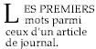
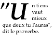

Contenu
En CSS, des règles de reconnaissance de motifs déterminent les règles de style qui s'appliquent aux éléments de l'arbre du document. Ces motifs, nommés sélecteurs, sont variés, allant du simple nom d'un élément jusqu'aux riches motifs contextuels. Quand toutes les conditions d'un motif sont vérifiées pour un élément donné, celui-ci est retenu par le sélecteur.
Dans un sélecteur, la sensibilité à la casse d'un nom d'élément du document dépend du langage utilisé pour le document. Par exemple, ceux-ci sont insensibles à la casse en HTML, par contre, ils le sont en XML.
Cette table résume la syntaxe du sélecteur de CSS2 :
| Motif | Signification | Décrit au chapitre... |
|---|---|---|
| * | Correspond à tout élément. | Sélecteur universel |
| E | Correspond à tout élément E (c.à.d., un élément de type E). | Sélecteurs de type |
| E F | Correspond à tout élément F qui est un descendant de l'élément E. | Sélecteurs descendants |
| E > F | Correspond à tout élément F aussi un enfant de l'élément E. | Sélecteurs d'enfant |
| E:first-child | Correspond à un élément E aussi le premier enfant de son élément parent. | La pseudo-classe :first-child |
| E:link E:visited | Correspond à un élément E qui est une ancre dans la source dont le lien n'a pas été visité (:link) ou bien l'a déjà été (:visited). | Les pseudo-classes de lien |
| E:active E:hover E:focus | Correspond à l'élément E au cours de certaines actions de l'utilisateur. | Les pseudo-classes dynamiques |
| E:lang(c) | Correspond à l'élément de type E qui emploie une langue c (la détermination de cette langue est spécifique au langage du document). | La pseudo-classe :lang() |
| E + F | Correspond à tout élément F immédiatement précédé par un élément E. | Les sélecteurs adjacents |
| E[foo] | Correspond à tout élément E avec l'attribut "foo" (quelles qu'en soient les valeurs). | Sélecteurs d'attribut |
| E[foo="warning"] | Correspond à tout élément E dont l'attribut "foo" a exactement la valeur "warning". | Sélecteurs d'attribut |
| E[foo~="warning"] | Correspond à tout élément E dont l'attribut "foo" a pour valeur une liste de valeurs séparées par des caractères blancs et dont une de celles-ci est "warning". | Sélecteurs d'attribut |
| E[lang|="en"] | Correspond à tout élément E dont l'attribut "lang" a pour valeur une liste de valeurs séparées par des tirets, cette liste commençant (à gauche) par "en". | Sélecteurs d'attribut |
| DIV.warning | Seulement en HTML. Identique à DIV[class~="warning"]. | Sélecteurs de classe |
| E#myid | Correspond à tout élément E dont l'ID est "myid". | Sélecteurs d'ID |
Un sélecteur simple est soit un sélecteur de type, soit un sélecteur universel immédiatement suivi par un sélecteur d'attribut, un sélecteur d'ID ou une pseudo-classes, zéro ou plusieurs de ceux-ci, dans n'importe quel ordre. Le sélecteur simple a une correspondance si tous ses composants sont vérifiés.
Un sélecteur consiste en une succession d'un, ou plusieurs, sélecteurs simples, séparés par des combinateurs. Ces combinateurs sont : les caractères blancs et les caractères ">" et "+". Des caractères blancs peuvent être insérés entre un combinateur et ses sélecteurs simples.
Les éléments de l'arbre du document en correspondance avec un sélecteur sont appelés sujets de ce sélecteur. Un sélecteur consistant en un seul sélecteur simple est en correspondance avec tout élément qui satisfait à ses conditions. Quand on place un sélecteur simple avec son combinateur au début d'une succession d'autres sélecteurs, ceci entraîne un supplément de contraintes pour la correspondance. C'est pourquoi, les sujets d'un sélecteur forment toujours un sous-ensemble des éléments qui correspondent au sélecteur simple situé le plus à droite.
On peut accoler un pseudo-élément au dernier sélecteur d'une succession ; dans ce cas, l'information de style s'applique sur une partie de chacun des sujets.
On peut regrouper plusieurs sélecteurs dans une liste, séparés par des virgules, quand ceux-ci partagent les mêmes déclarations.
Dans cet exemple, on condense trois règles qui ont les mêmes déclarations en une seule :
H1 { font-family: sans-serif }
H2 { font-family: sans-serif }
H3 { font-family: sans-serif }
ceci est équivalent à :
H1, H2, H3 { font-family: sans-serif }
CSS offre d'autres mécanismes "raccourcis" semblables, comme les déclarations multiples et les propriétés raccourcies.
Le sélecteur universel, noté "*", est vérifié pour le nom de n'importe quel type d'élément. Il agit sur chacun des éléments de l'arbre du document.
Si le sélecteur universel n'est pas le seul composant d'un sélecteur simple, on peut l'omettre. Par exemple :
*[LANG=fr] et [LANG=fr] sont équivalents.
*.warning et .warning sont équivalents.
*#myid et #myid sont équivalents.
Un sélecteur de type correspond au nom d'un type d'élément dans le langage du document. Il correspond à chaque instance de ce type d'élément dans l'arbre du document.
La règle suivante concerne tous les éléments H1 d'un arbre :
H1 { font-family: sans-serif }
Un auteur peut vouloir disposer d'un sélecteur pour atteindre un élément donné,
celui-ci étant lui-même un descendant d'un autre élément de l'arbre du
document (ex. "Toucher ces éléments EM qui sont dans un élément H1").
Les sélecteurs descendants
sont l'expression de cette relation dans un motif. Ceux-ci se composent de deux sélecteurs, ou plus,
séparés par un caractère blanc.
Un sélecteur descendant de la forme "A B" se vérifie quand un élément
B est un descendant arbitraire d'un élément A, son ancêtre.
Considérons par exemple les règles suivantes :
H1 { color: red }
EM { color: red }
Bien que l'intention ait pu être l'emphase d'un texte en changeant sa couleur, l'effet sera perdu dans ce cas-ci :
<H1>Ce titre est <EM>très</EM> important</H1>
Nous tenons compte de cette éventualité en ajoutant une règle au jeu précédent, celle-ci fixe une couleur bleu au texte d'un élément EM survenant dans un élément H1 :
H1 { color: red }
EM { color: red }
H1 EM { color: blue }
La troisième règle s'appliquera à l'élément EM de cet extrait-ci :
<H1>Ce <SPAN class="myclass">titre est <EM>très</EM> important.</SPAN></H1>
Avec ce sélecteur :
DIV * P
on touche les éléments P qui sont les petits-enfants, ou les descendants plus lointains, d'un élément DIV. Noter les caractères blancs facultatifs de chaque côté du "*".
Dans cette règle suivante, on a une combinaison de sélecteur descendant et de sélecteur d'attribut, celle-ci concerne les éléments qui, à la fois, (1) ont un attribut "href" et (2) sont contenus dans un élément P lui-même dans un élément DIV :
DIV P *[href]
Un sélecteur d'enfant se vérifie quand un élément est l'enfant d'un autre élément. Celui-ci se compose de deux sélecteurs, ou plus, séparés par le caractère ">".
La règle suivante applique un style à tous les enfants P de l'élément BODY :
BODY > P { line-height: 1.3 }
Dans cet exemple-ci, on a combiné un sélecteur descendant et un sélecteur d'enfant :
DIV OL>LI P
Cette règle concerne tout élément P qui est un descendant d'un élément LI, celui-ci devant être l'enfant d'un élément OL qui, à son tour, doit être un descendant de l'élément DIV. Noter l'absence de caractères blancs, facultatifs, autour de la combinateur ">".
Pour des renseignements sur la façon de sélectionner le premier enfant d'un élément, voir le chapitre sur la pseudo-classe :first-child plus loin.
Les sélecteurs d'enfants adjacents suivent une syntaxe de cette forme : E1 + E2, où E2 est le sujet du sélecteur. Celui-ci est vérifié quand E1 et E2 ont le même parent dans l'arbre du document et quand E1 y précède immédiatement E2.
Selon le contexte, les éléments adjacents génèrent un formatage des objets dont la mise en forme est gérée automatiquement (ex. les marges verticales des boîtes adjacentes qui fusionnent). Avec le combinateur "+", les auteurs peuvent ajouter des styles aux éléments adjacents.
En exemple, cette règle précise qu'un élément P qui suit un élément MATH ne devrait pas avoir d'alinéa :
MATH + P { text-indent: 0 }
Le suivant produit une réduction de l'espace vertical entre un élément H1 et l'élément H2 qui le suit juste après :
H1 + H2 { margin-top: -5mm }
Ici, la règle est similaire à la précédente, à la différence qu'elle comporte un sélecteur d'attribut en plus. Ainsi, une mise en forme particulière s'applique aux éléments H1 avec un attribut class="opener" :
H1.opener + H2 { margin-top: -5mm }
Avec CSS2, on peut spécifier des règles qui s'applique aux attributs définis dans le document source.
Les sélecteurs d'attribut peuvent trouver une correspondance de quatre façons :
[att]
[att=val]
[att~=val]
[att|=val]
Les valeurs d'attribut doivent être des identificateurs ou des chaînes. La sensibilité à la casse des noms et des valeurs d'attributs dans les sélecteurs dépendent du langage du document.
Par exemple, ce sélecteur d'attribut correspond avec ceux des éléments H1 qui ont un attribut "title", quelle que soit sa valeur :
H1[title] { color: blue; }
Dans cet exemple, le sélecteur correspond avec tous les éléments SPAN dont la valeur de l'attribut "class" est exactement "exemple" :
SPAN[class=exemple] { color: blue; }
On peut utiliser plusieurs sélecteurs d'attribut qui se réfèrent à plusieurs attributs d'un élément, ou même, plusieurs fois au même attribut.
Ici, le sélecteur correspond avec tous les éléments SPAN dont l'attribut "bonjour" a exactement la valeur "soleil" et l'attribut "adieu" exactement la valeur "nuages" :
SPAN[bonjour="soleil"][adieu="nuages"] { color: blue; }
Les sélecteurs suivants illustrent la différence entre "=" et "~=". Le premier sera vérifié pour, en exemple, la valeur "copyright copyleft copyeditor" de l'attribut "rel". Le second uniquement quand l'attribut "href" aura la valeur "http://www.w3.org/".
A[rel~="copyright"] A[href="http://www.w3.org/"]
La règle suivante cache tous les éléments dont la valeur de l'attribut "lang" est "fr" (c.à.d. en langue française).
*[LANG=fr] { display : none }
Cette règle-ci sera vérifiée pour les valeurs de l'attribut "lang" qui commence par "en", y inclus "en", "en-US" et "en-cockney" :
*[LANG|="en"] { color : red }
De la même façon, la feuille de style auditive ci-dessous permet la lecture d'un dialogue avec des voix différentes pour chaque personnage :
DIALOGUE[character=romeo]
{ voice-family: "Lawrence Olivier", charles, male }
DIALOGUE[character=juliet]
{ voice-family: "Vivien Leigh", victoria, female }
La correspondance se fait sur les valeurs d'attributs dans l'arbre du document. Pour des langages de document autres que HTML, les valeurs par défaut des attributs peuvent être définies dans un DTD ou ailleurs. Les feuilles de style devraient être construites pour fonctionner même si les valeurs par défaut n'étaient pas inclues dans l'arbre du document.
Considérons, par exemple, un élément EXEMPLE avec un attribut "notation" et sa valeur par défaut "decimal". L'extrait du DTD pourrait être :
<!ATTLIST EXEMPLE notation (decimal,octal) "decimal">
Si la feuille de style contient les règles :
EXEMPLE[notation=decimal] { /*... paramètres par défaut des propriétés ...*/ }
EXEMPLE[notation=octal] { /*... autres paramètres ...*/ }
alors, pour les cas où l'attribut a une valeur par défaut, non fixé explicitement, il faudrait rajouter cette règle-ci :
EXAMPLE { /*... paramètres par défaut de la propriété ...*/ }
Ce sélecteur étant moins spécifique qu'un sélecteur d'attribut, celui-ci ne sera employé que dans les situations par défaut. Il faudra tenir compte explicitement de toutes les autres valeurs d'attribut qui ne doivent pas recevoir le même style que le défaut.
Pour les feuilles de style employées avec HTML, les auteurs, visant l'attribut "class", peuvent utiliser la notation avec un point (.) en remplacement de celle avec "~=". Ainsi, "DIV.valeur" et "DIV[class~=valeur]" ont la même signification en HTML. La valeur de l'attribut doit suivre immédiatement le caractère ".".
Par exemple, on peut appliquer un style à ceux des élément avec l'attribut class~="pastoral", comme suit :
*.pastoral { color: green } /* tous les éléments avec class~=pastoral */
ou simplement avec :
.pastoral { color: green } /* tous les éléments avec class~=pastoral */
Dans ce qui suit, on applique seulement le style aux éléments H1 avec l'attribut class~="pastoral" :
H1.pastoral { color: green } /* les éléments H1 avec class~=pastoral */
Selon ces règles, le premier élément H1 n'aurait pas son texte en vert, contrairement au second :
<H1>Pas vert</H1> <H1 class="pastoral">Vraiment vert</H1>
Pour une correspondance sur un sous-ensemble des valeurs de "class", chacune des valeurs doit être précédée par un ".", dans n'importe quel ordre.
Par exemple, cette règle suivante est vérifiée pour chacun des éléments P dont la valeur de l'attribut "class" est constituée d'une suite de valeurs séparées par des caractères blancs, parmi celles-ci "pastoral" et "marine" :
P.pastoral.marine { color: green }
La règle est appliquée pour une valeur class="pastoral blue aqua marine", mais pas pour class="pastoral blue".
Remarque : Avec une telle importance donnée par CSS à l'attribut "class", les auteurs pourraient presque construire leur propre "langage de document" en partant d'éléments qui ont une faible vocation de présentation (comme DIV et SPAN en HTML) et en leur appliquant un style via cet attribut. Les auteurs devraient éviter une telle pratique car les significations des éléments de structure d'un langage de document sont reconnues et acceptées, celles des classes définies par un auteur risquant de ne pas l'être.
Les langages de document peuvent contenir des attributs déclarés de type ID. Ceux-ci sont particuliers dans la mesure où il ne peut y avoir deux de ces attributs avec une même valeur ; quel que soit le langage du document, un attribut ID sert à identifier un élément unique. En HTML, les attributs ID sont représentés par "id" ; en XML, les applications peuvent utiliser d'autres noms pour ceux-ci, mais avec les mêmes restrictions.
Les auteurs peuvent utiliser l'attribut ID d'un langage donné pour identifier une instance d'un élément dans l'arbre du document. Un sélecteur d'ID de CSS correspond avec un tel élément au travers de l'identificateur qui lui est assigné. Ce sélecteur est formé du caractère "#" immédiatement suivi par la valeur de l'ID.
Le sélecteur d'ID suivant correspond à l'élément H1 dont la valeur de l'attribut ID est "chapitre1" :
H1#chapitre1 { text-align: center }
Dans cet exemple, la règle s'applique à l'élément avec un ID dont la valeur est "z98y". Il s'agit de l'élément P :
<HEAD>
<TITLE>Toucher P</TITLE>
<STYLE type="text/css">
*#z98y { letter-spacing: 0.3em }
</STYLE>
</HEAD>
<BODY>
<P id=z98y>Un texte élargi</P>
</BODY>
Par contre, dans celui-ci, la règle s'applique seulement à un élément H1 avec un ID dont la valeur est "z98y". Ici, l'élément P ne sera pas concerné :
<HEAD>
<TITLE>Touche seulement H1</TITLE>
<STYLE type="text/css">
H1#z98y { letter-spacing: 0.5em }
</STYLE>
</HEAD>
<BODY>
<P id=z98y>Un texte élargi</P>
</BODY>
Les sélecteurs d'ID ont une plus grande priorité spécificité
que les sélecteurs d'attribut. En HTML, par exemple, le sélecteur #p123 est plus spécifique
que le sélecteur [ID=p123], compte tenu de la cascade.
Remarque :
En XML 1.0 [XML10],
c'est dans un DTD que l'on répertorie les attributs qui contiennent les IDs des éléments.
Au moment d'interpréter un document XML, les agents utilisateurs ne lisant pas toujours le DTD,
ceux-ci risquent de ne pas connaître l'ID d'un élément. Un auteur qui sait ou suspecte cette possibilité
devrait employer un sélecteur d'attribut normal : [name=p371] plutôt que #p371.
Comme l'ordre de cascade diffère selon qu'on emploie un sélecteur d'attribut ou un sélecteur d'ID,
il peut être nécessaire de compléter les déclarations avec une priorité
"!important" : [name=p371] {color: red !important}. Bien entendu, dans un document XML 1.0 sans DTD,
les éléments n'ont pas du tout d'IDs.
En CSS2, le style est habituellement lié à un élément selon sa position dans l'arbre du document. Ce modèle simple est suffisant la plupart du temps, mais du fait de la structure de cet arbre, n'est pas adapté dans certains contextes usuels de publication. Par exemple, en HTML 4.0 (voir [HTML40]), il n'existe pas d'éléments qui se réfèrent à la première ligne d'un paragraphe, et donc aucun sélecteur simple en CSS ne peut y correspondre.
C'est pourquoi CSS introduit les concepts de pseudo-éléments et de pseudo-classes ce qui permet une mise en forme à partir d'informations absentes de l'arbre du document.
Ni les pseudo-éléments, ni les pseudo-classes n'apparaissent dans la source ou l'arbre du document.
Les pseudo-classes sont autorisées n'importe où dans le sélecteur, alors qu'un pseudo-élément ne peut être spécifié qu'après le sujet du sélecteur.
Les pseudo-éléments et pseudo-classes sont insensibles à la casse.
Certaines pseudo-classes s'excluent mutuellement, d'autres peuvent s'appliquer simultanément au même élément. Les conflits éventuels se résolvent selon l'ordre normal de cascade.
Les agents utilisateurs conformes à HTML peuvent ignorer toutes les règles dont les sélecteurs comportent des pseudo-éléments :first-line ou :first-letter, ou, sinon, peuvent n'appliquer qu'une partie de leurs propriétés.
La pseudo-classe :first-child correspond au premier élément enfant d'un autre élément.
Dans l'exemple suivant, le sélecteur désigne chacun des éléments P qui soit le premier enfant d'un élément DIV. La règle supprime l'alinéa du premier paragraphe d'un élément DIV :
DIV > P:first-child { text-indent: 0 }
Dans l'extrait suivant, ce même sélecteur viserait l'élément P dans l'élément DIV :
<P> Le dernier P avant la note. <DIV class="note"> <P> Le premier P à l'intérieur de la note. </DIV>mais, dans cet extrait-ci, il ne toucherait pas le second élément P :
<P> Le dernier P avant la note. <DIV class="note"> <H2>Note</H2> <P> Le premier P à l'intérieur de la note. </DIV>
La règle suivante applique un style de texte gras à chacun des élément EM descendants d'un élément P, celui-ci étant un premier enfant :
P:first-child EM { font-weight : bold }
Noter que les boîtes anonymes n'apparaissent pas dans l'arbre du document, c'est pourquoi elles ne sont pas prises en compte au moment de la mise en forme du premier enfant.
Par exemple, l'élément EM qui est dans :
<P>abc <EM>défaut</EM>celui-ci est le premier enfant de l'élément P.
Les deux sélecteurs suivants sont équivalents :
* > A:first-child /* A est le premier enfant pour tout élément */ A:first-child /* Idem */
En général, les agents utilisateurs représentent différemment les liens qui n'ont pas été visités de ceux qui l'ont déjà été. CSS en fournit un équivalent au travers des pseudo-classes ':link' et ':visited'.
Remarque : Après un certain temps, les agents utilisateurs peuvent revenir de l'état visité à l'état non-visité du lien.
Ces deux états s'excluent mutuellement.
Le langage du document détermine quelles ancres ont des sources hyperliens. Ainsi en HTML 4.0, les pseudo-classes d'ancre s'appliquent aux éléments A avec un attribut "href". Les deux déclarations CSS2 suivantes produisent le même effet :
A:link { color: red }
:link { color: red }
Pour ce lien :
<A class="external" href="http://out.side/">lien externe</A>si celui est visité, la règle suivante :
A.external:visited { color: blue }
celle-ci rendra bleue la couleur du lien.
Les agents utilisateurs interactifs changent parfois l'aspect du rendu en réponse aux actions de l'utilisateur. CSS2 propose trois pseudo-classes pour un usage courant :
Ces pseudo-classes ne s'excluent pas mutuellement. Un élément peut correspondre à plusieurs d'entre elles au même moment.
CSS ne définit pas lesquels des éléments peuvent être dans un de ces états ou comment ceux-ci entrent et sortent de ces états. L'écriture peut varier, selon que les éléments réagissent aux actions de l'utilisateur, ou non ; les divers appareils et agents utilisateurs peuvent avoir différentes façons de désigner ou d'activer les éléments.
Les agents utilisateurs ne sont pas tenus, en raison des transitions provoquées par les pseudo-classes, de remettre en forme le document en cours d'affichage. Par exemple, une feuille de style peut spécifier que la taille de la police ('font-size') d'un lien sous l'effet de la pseudo-classe :active soit plus grande que celle d'un lien inactif, et un agent utilisateur, comme cela peut modifier la position des lettres, peut en ignorer la règle.
A:link { color: red } /* lien non-visité */
A:visited { color: blue } /* lien visité */
A:hover { color: yellow } /* lien survolé */
A:active { color: lime } /* lien activé */
Noter que la règle A:hover doit être placé après A:link et A:visited, autrement les règles de cascade feront que la propriété 'color' spécifiée par celle-ci sera cachée. De la même façon, comme la règle A:active est placée après A:hover, la couleur spécifiée par celle-ci (lime) sera appliquée quand l'utilisateur active et survole l'élément A.
Voici un exemple de combinaison de pseudo-classes dynamiques :
A:focus { background: yellow }
A:focus:hover { background: white }
Le dernier sélecteur correspond à un élément A qui a l'attention et qui est survolé.
Au sujet de la représentation des contours de l'objet qui a l'attention, consulter le chapitre sur les contours dynamiques pour l'attention.
Remarque : En CSS1, la pseudo-classe ':active' et les pseudo-classes ':link' et ':visited' s'excluaient mutuellement. Ce n'est plus le cas. Un élément peut correspondre aux pseudo-classes ':visited' et ':active' (ou ':link' et ':active'), les règles normales de cascade déterminant lesquelles des propriétés s'appliquent.
Quand le langage du document spécifie une manière de déterminer le
langage humain d'un élément,
on peut écrire des sélecteurs CSS pour viser un élément selon la langue
que celui-ci emploie. Par exemple en HTML [HTML40],
on peut déterminer la langue employée en combinant l'attribut "lang", l'élément META
et, d'une certaine façon, des informations issues du protocole (tel que les entêtes HTTP).
En XML, on utilise un attribut nommé XML:LANG xml:lang,
d'autres méthodes de détermination spécifiques au langage d'un document pouvant exister.
La pseudo-classe ':lang(C)' est vérifiée pour un élément dans la langue C. La lettre C représente un code de langue tel que spécifié dans HTML 4.0 [HTML40] et RFC 1766 [RFC1766]. La correspondance s'effectue de la même façon que pour l'opérateur '|='.
Les règles suivantes fournissent les marques de citations pour un document HTML, selon que celui-ci est en français ou en allemand :
HTML:lang(fr) { quotes: '« ' ' »' }
HTML:lang(de) { quotes: '»' '«' '\2039' '\203A' }
:lang(fr) > Q { quotes: '« ' ' »' }
:lang(de) > Q { quotes: '»' '«' '\2039' '\203A' }
La seconde paire de règles applique en fait la propriété 'quotes' aux éléments Q, en fonction de la langue du parent. Ceci pour tenir compte du choix des marques de citations, celles-ci dépendent typiquement de la langue employée par l'élément qui les contient et non de la citation elle-même. Par exemple, cet extrait anglais « by surprise » (et non “by surprise”) cité au milieu d'un texte français.
Le pseudo-élément :first-line produit un style particulier sur la première ligne formatée d'un paragraphe. Par exemple :
P:first-line { text-transform: uppercase }
La règle précédente signifie "mettre les lettres de la première ligne de chaque paragraphe en majuscule". Cependant, le sélecteur "P:first-line" ne correspond à aucun élément HTML réel. Celui-ci correspond en fait à un pseudo-élément que l'agent utilisateur conforme va insérer au début de chaque paragraphe.
Noter que la longueur de la première ligne dépend de plusieurs facteurs, dont la largeur de la page, la taille de la police, etc. Ainsi un paragraphe quelconque en HTML tel que :
<P>Voici un paragraphe HTML plutôt long qui va être découpé en plusieurs lignes. La première ligne sera identifiée à l'aide d'une séquence de balises fictives. Les autres lignes vont rester ordinaires dans la suite du paragraphe.</P>Celui-ci va apparaître avec le découpage des lignes suivant :
VOICI UN PARAGRAPHE HTML PLUTÔT LONG qui va être découpé en plusieurs lignes. La première ligne sera identifiée à l'aide d'une séquence de balises fictives. Les autres lignes vont rester ordinaires dans la suite du paragraphe.Un agent utilisateur pourrait le "récrire" et y inclure la séquence de balises fictives pour le pseudo-élément :first-line. Cette séquence fictive aide à représenter comment les propriété sont héritées.
<P><P:first-line>Voici un paragraphe HTML plutôt longqui</P:first-line>qui va être découpé en plusieurs lignes. La première ligne sera identifiée à l'aide d'une séquence de balises fictives. Les autres lignes vont rester ordinaires dans la suite du paragraphe.</P>
Quand un pseudo-élément coupe un élément réel, on peut souvent décrire l'effet désiré avec une séquence de balises fictives qui ferment puis ré-ouvrent cet élément. Ainsi, si on balise le paragraphe de l'exemple avec un élément SPAN :
<P><SPAN class="test">Voici un paragraphe HTML plutôt long qui va être découpé en plusieurs lignes.</SPAN> La première ligne sera identifiée à l'aide d'une séquence de balises fictives. Les autres lignes vont rester ordinaires dans la suite du paragraphe.</P>L'agent utilisateur pourrait générer la séquence de balises fictives, ouvrantes et fermantes, de façon appropriée, pour l'élément SPAN au moment d'insérer celle du pseudo-élément :first-line.
<P><P:first-line><SPAN class="test"> Voici un paragraphe HTML plutôt long</SPAN></P:first-line><SPAN class="test"> qui va être découpé en plusieurs lignes.</SPAN> La première ligne sera identifiée à l'aide d'une séquence de balises fictives. Les autres lignes vont rester ordinaires dans la suite du paragraphe.</P>
Le pseudo-élément :first-line ne peut s'attacher qu'à un élément de type bloc.
Le pseudo-élément :first-line est similaire à un élément de type en-ligne, avec certaines restrictions. Seules les propriétés suivantes peuvent lui être appliquées : les propriétés de police, les propriétés de couleur, les propriétés d'arrière-plan, 'word-spacing', 'letter-spacing', 'text-decoration', 'vertical-align', 'text-transform', 'line-height', 'text-shadow' et 'clear'.
Dans le cas où une certaine première ligne est aussi la première d'un certain élément de type bloc A et en même temps que l'ancêtre B de celui-ci, la séquence de balise fictive devient :
<B>...<A>...<B:first-line><A:first-line>Voici la première ligne</A:first-line></B:first-line>
Toutes les balises fictives se trouvent dans le plus petit des élément de type bloc, l'ordre d'imbrication des balises fictives A:first-line et B:first-line correspondant à celui des éléments A et B.
La "première ligne mise en forme" d'un élément de type bloc correspond à la première ligne dans le flot de l'élément, ignorant ainsi d'éventuels éléments flottants ou en position absolue. Par exemple :
<div> <p style="float: left">Paragraphe flottant...</p> <p>La première ligne commence ici...</p> </div>
Un sélecteur 'div:first-line' s'appliquerait à la première ligne du second paragraphe, car le premier paragraphe se trouve en dehors du flot normal.
Le pseudo-élément :first-letter peut être employé pour faire des capitales initiales et des lettrines, ce sont des effets typographiques courants. Ce genre de lettre initiale est assimilé à un élément de type en-ligne quand la valeur de sa propriété 'float' est 'none', et assimilé à un élément flottant autrement.
Le pseudo-élément :first-letter admet ces propriétés : les propriétés de police, les propriétés de couleur, les propriétés d'arrière-plan, 'text-decoration', 'vertical-align' (seulement si la valeur de la propriété 'float' est 'none'), 'text-transform', 'line-height', les propriétés de marge, les propriétés d'espacement, les propriétés de bordure, 'float', 'text-shadow' et 'clear'.
Cette feuille de style produit une lettrine qui s'étend sur deux lignes :
<!DOCTYPE HTML PUBLIC "-//W3C//DTD HTML 4.0//EN">
<HTML>
<HEAD>
<TITLE>Lettrine</TITLE>
<STYLE type="text/css">
P { font-size: 12pt; line-height: 12pt }
P:first-letter { font-size: 200%; font-style: italic;
font-weight: bold; float: left }
SPAN { text-transform: uppercase }
</STYLE>
</HEAD>
<BODY>
<P><SPAN>Les premiers</SPAN> mots parmi ceux d'un article
de journal.</P>
</BODY>
</HTML>
Ce qui pourrait apparaître de cette manière :
 [D]
La séquence de balises fictives en est :
<P> <SPAN> <P:first-letter> L </P:first-letter>es premiers </SPAN> mots parmi ceux d'un article de journal. </P>
Noter que les balises du pseudo-élément :first-letter (c.à.d., le premier caractère) viennent buter contre le contenu, alors que la balise ouvrante du pseudo-élément :first-line s'insère juste après celle ouvrante de l'élément auquel il est accolé.
Pour obtenir le formatage des lettrines traditionnelles, les agents utilisateurs peuvent approcher les tailles des polices, par exemple dans l'alignement des lignes de base. Le contour des glyphes peut aussi intervenir dans le formatage.
Les caractères de ponctuation (c.à.d. les caractères définis en Unicode [UNICODE] dans les classes de ponctuation "open" (Ps), "close" (Pe) et "other" (Po) ) qui précèdent la première lettre devraient également être pris en compte, comme ici :
 [D]
Le pseudo-élément :first-letter ne peut correspondre qu'avec une partie d'un élément de type bloc.
Certaines combinaisons de lettres, dans une langue donnée, peuvent obéir à des règles particulières. En hollandais, par exemple, quand la combinaison "ij" survient au début d'un mot, le pseudo-élément :first-letter devrait les prendre en compte ensemble.
L'exemple suivant illustre l'interaction de pseudo-éléments qui sont enchevêtrés. La première lettre de chacun des éléments P sera verte et aura une taille de police de '24pt'. La suite de cette première ligne sera bleue, le reste des lignes du paragraphe sera rouge.
P { color: red; font-size: 12pt }
P:first-letter { color: green; font-size: 200% }
P:first-line { color: blue }
<P>Voici un morceau de texte qui est formaté sur deux lignes.</P>
En supposant qu'un retour à la ligne survient avant le mot "sur", la séquence de balises fictives en serait :
<P> <P:first-line> <P:first-letter> V </P:first-letter>oici un morceau de texte qui est formaté </P:first-line> sur deux lignes. </P>
Noter que l'élément P:first-letter se tient à l'intérieur de l'élément P:first-line. Le pseudo-élément :first-letter hérite des propriétés appliquées au pseudo-élément :first-line, cependant, si on lui spécifie une même propriété, c'est la valeur de cette dernière qui sera retenue.
Les pseudo-élément ':before' et ':after' servent à insérer un contenu généré avant ou après celui d'un élément. Le chapitre sur le texte généré en donne une explication.
H1:before {content: counter(chapno, upper-roman) ". "}
Combinés aux pseudo-éléments :before et :after, le pseudo-élément :first-letter, ou :first-line, s'applique à la première lettre, ou à la première ligne, de l'élément, y compris le texte inséré.
P.special:before {content: "Spécial !"}
P.special:first-letter {color: gold}
Ceci donnera une couleur or au "S" de "Spécial !".